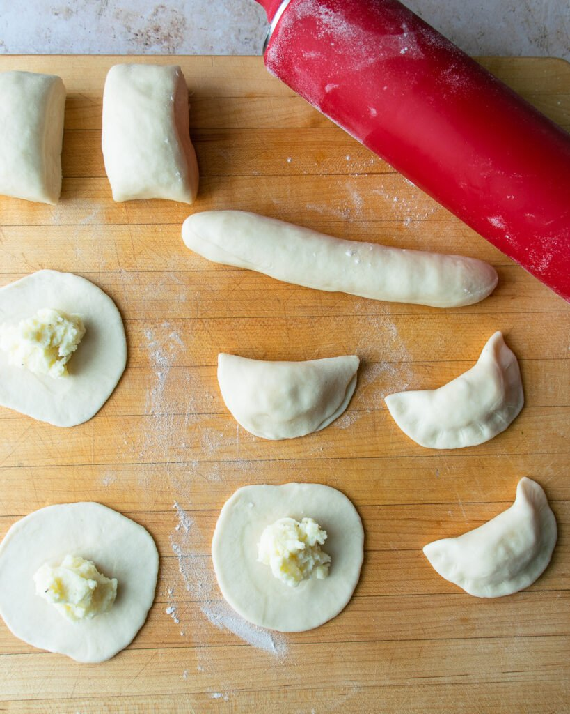

<!DOCTYPE html>
<html lang="en">
<head>
    <meta charset="UTF-8">
    <meta http-equiv="X-UA-Compatible" content="IE=edge">
    <meta name="viewport" content="width=device-width, initial-scale=1.0">
    <title>Varenyky For Ukraine</title>
    <link rel = "stylesheet" href= "styles.css">
    <link href="https://cdn.jsdelivr.net/npm/bootstrap@5.1.3/dist/css/bootstrap.min.css" rel="stylesheet">
  <script src="https://cdn.jsdelivr.net/npm/bootstrap@5.1.3/dist/js/bootstrap.bundle.min.js"></script>
</head>
<body>
    <div class = "header">
        <h1>VARENYKY FOR UKRAINE</h1>
        <button type = "button" class = "btn btn-outline-dark">GO TO RECIPE</button>
    </div>
    <div class = "container-fluid"></div>
        <div class = "row">
            <div class = "col">
                <p>As Ukrainians are inspiring the world, many are only just learning about the wonderfully rich culture and history Ukraine has. In order to stand with Ukraine I want to provide a step by step recipe for making one of Ukraine’s most delicious dishes, varenyky. Varenyky are delicious dumplings that are primarily filled with mashed potato. It is served with carmelized onions and sour cream. My goal is to continue ot teach people about my people’s culture, what better way than through food?</p>
            </div>
            <div class = "col">
                
            </div>
        </div>
        <div class = "row">
            <div id = "recipe slides" class = "carousel slide" bata-bs-ride = "carousel">
                <div class = "carousel-indicators">
                    <button type = "button" data-bs-target = "#recipe slides" data-bs-slide-to="0" class = "active"></button>
                    <button type = "button" data-bs-target = "#recipe slides" data-bs-slide-to="1"></button>
                    <button type = "button" data-bs-target = "#recipe slides" data-bs-slide-to="2"></button>
                    <button type = "button" data-bs-target = "#recipe slides" data-bs-slide-to="3"></button>
                    <button type = "button" data-bs-target = "#recipe slides" data-bs-slide-to="4"></button>
                </div>

                <div class = "carousel-inner">
                    <div class = "carousel-item active">
                        
                    </div>
                </div>
            </div>
        </div>
    </div>
    <script src="jquery-3.5.1.min.js"></script>
    <script src="bootstrap/js/bootstrap.min.js"></script>
</body>

</html>